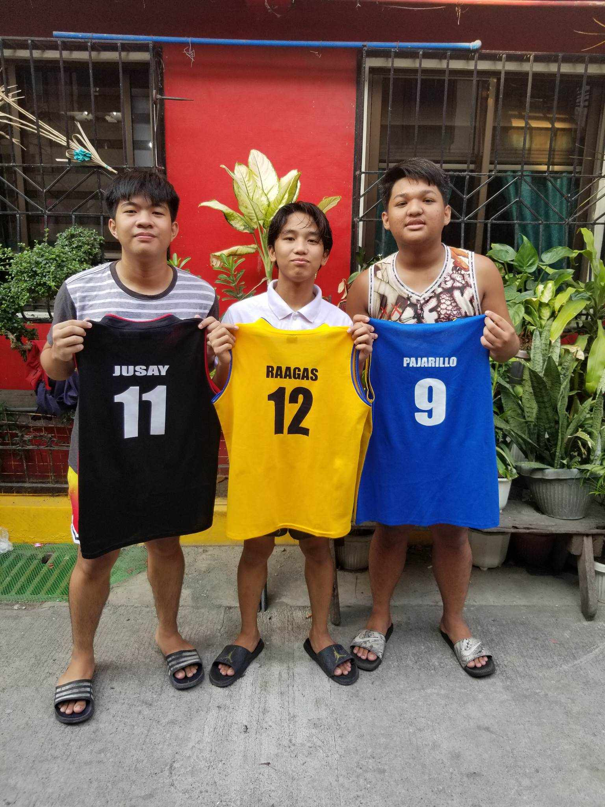

Republic of the Philippines
Department of Education
National Capital Region
DIVISION OF CITY SCHOOLS - MANILA
Manila Education Center Arroceros Forest Park Antonio
J. Villegas St. Ermita, Manila
Information and Communications
Technology (ICT)
Grade 10 Webpage Design
Special Science Course
Quarter 3 Week 2
Module 2
USING CASCADING STYLE SHEETS (CSS) ELEMENTS
HOW TO USE THIS MODULE?
Before starting the module, I want you to set aside other tasks that will disturb
you while enjoying the lessons. Read the simple instruction below to successfully
enjoy the objectives of this kit. Have fun!
1. Follow carefully all the contents and instructions indicated in every page on this
module
2. Write on your notebook or any writing pad the concepts about the lessons.
Writing enhances learning, which is important to develop and keep in mind.
3. Perform all the provided activities in the module.
4. Let you facilitator/guardian assess your answers.
5. Analyze conceptually the post-test and apply what you have
learned.
6. Enjoy studying!
PARTS OF THE MODULE
● Expectations - These are what you will be able to know after completing the
lessons in the module.
● Pre-test - This will measure your prior knowledge and the concepts to be
mastered throughout the lesson.
● Looking Back - This section will measure what learnings and skills that you
understand from the previous lesson.
● Brief Introduction-This section will give you an overview of the lesson.
● Activities - These are activities designed to develop critical thinking and other
competencies. This can be done with or without a partner depending on the
nature of the activity.
● Remember - This section summarizes the concepts and applications of the
lessons.
● Checking your Understanding - It will verify how you learned from the lesson.
● Post-test - This will measure how much you have learned from the entire
module.
2
